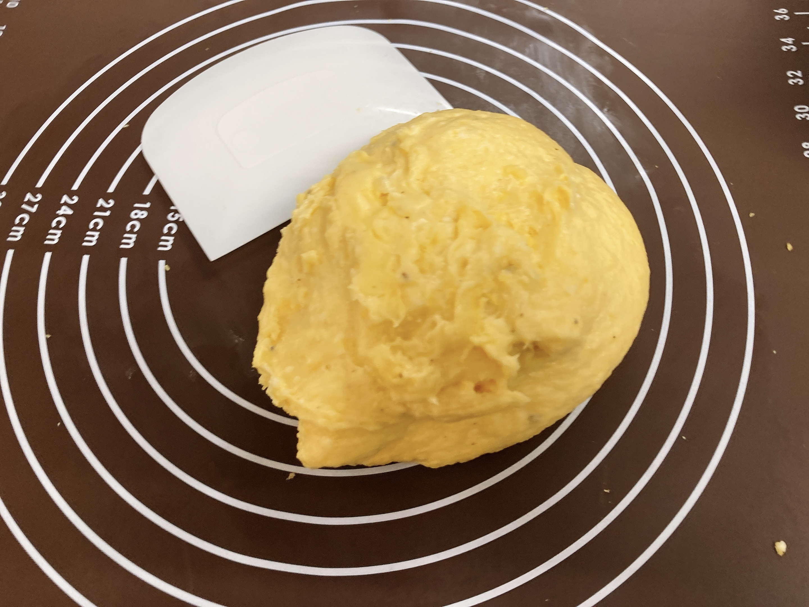

おれのかんがえるさいきょうの誕生日パーティー
誕生日にはケーキだって？そんな平々凡々なもので満足できるわけがなかろう、こちとら音ゲーマー後輩によくわからんキモオタトークをぶちかましている間に20歳が終わってしまったんだぞ（？？？）。
というわけでセルフ誕生日祝いの報告をします。
※集合体恐怖症の方にはキツい写真がたくさん出てくるのでご注意ください※
🍳の誕生日にはポンデケージョを焼くという決まりがあるのです。
ポンデケージョって何？？？
わかる。それはそう。
ポンデケージョというのは、かのポンデリングの元ネタであるブラジルのパンで、かのタピオカの原料であるキャッサバの粉とチーズを主な材料とします。ポンデリングから想像がつくように、とってももっちもちで🍳の大好物です。よくある丸くて小さいチーズパンを想像すると大体合っているんじゃないかなと。
いや、合ってないんですけどね。
市販のチーズパンはもちもち度が足りない。ちゃんとキャッサバ粉を使っているわけではないチーズパンはポンデケージョとは認められません。よくある白玉粉レシピもしかり。ポンデケージョガチ勢ならキャッサバ粉オンリーしか許してはならない。でもキャッサバ粉オンリーチーズパンなんて市販で売ってるわけがないんですね。なので自作するしかない。
……本当のことを言うと、ポンデケージョを作ること自体は一切難しくありません。普通のパンと違ってイーストによる発酵の過程が一切なく、ただ材料を混ぜて丸めて焼くだけなので、むしろ製菓・製パン初心者大歓迎な代物です（もっと言うと製パンとは言えないレベル）。
なぜそんなものをわざわざ誕生日にだけ焼くのかというと、粉チーズ代がヤバい。よくスーパーに円柱形の容器のパルメザンチーズがあるじゃないですか。あれ買って、蓋開けて中のラベル剥がして、すぐさま容器を逆さにして中身を全部突っ込んで混ぜて焼くのがポンデケージョと思ってください。あれ1本何円すんだよ。チーズケーキのためにクリームチーズ200g一瞬で消し飛ばす製菓勢とは張り合えないかもしれませんが、材料のほとんどが強力粉でなんとかなってしまう製パン勢からするととんでもない費用です。大好物だからといって年がら年中自作し続けるわけにはいかないという。
ということで、今年もポンデケージョの日を心待ちにしていたわけです。
一昨日、そういやそろそろポンデケージョの材料買わないとなあになりました（遅くない？）。いつもなら製菓材料店に突っ走るんですけど、平日日中にまともな時間が取れないのと、ちょうどいい感じの粉チーズが置いてあるかわからないのとで、密林さんに頼ることにしました。
さて、爆速で届いてくれるキャッサバ粉はあるでしょうか？
https://www.amazon.co.jp/dp/B00CHN6412/ref=cm_sw_r_tw_dp_APXD5BA4RTFQ807YSPBE?_encoding=UTF8&psc=1
ありました。1kg。まあ製菓材料なんてそんなもん（？？？？？）。
ちなみに、参考にするキャッサバ粉オンリーポンデケージョレシピはこちら。なるほど、キャッサバ粉と粉チーズは質量比2:1のようですね。
https://www.amazon.co.jp/dp/B0084LA0J8/ref=cm_sw_r_tw_dp_GCYGW0TC5X8R24M7N2SM?_encoding=UTF8&psc=1
これ2本買えばよくない？？？？？🤪🤪🤪🤪🤪（向こう一ヶ月ポンデケージョ生活なのが確定してしまった）。
ついでにオリーブオイルも切れかけてた気がするのでカートにどーん。
https://www.amazon.co.jp/gp/product/B015GWXE54/ref=ppx_yo_dt_b_asin_title_o00_s00?ie=UTF8&psc=1
粉チーズだけ異様に高いのがおわかりいただければ幸い。
翌日無事に届いてくれたので、あとは当日を待つのみです。写真じゃサイズ感伝わらないけどオリーブオイルで察してください。まじでこれからしばらくポンデケージョ祭りを続ける人になってしまった。
レシピの2倍分量のパンを作りながら発酵・焼成の空き時間で4倍分量の焼き菓子を作るという製菓製パンガチ勢オタクな親の元で育ってしまった1ので、レシピは基本倍にして作るものという認識があります。今回も軽く3倍くらいにしていいかなと思っていた2のですが（？？？）、しばらくご無沙汰していたうちに寮のオーブンレンジが買い換えられていてなんと鉄板1段でしかオーブン機能が使えないという無能仕様になっており、一度に焼成できる量の制限で泣く泣く2倍で我慢しました。ちなみにオーブンレンジ2台同時占拠とかいう害悪ムーブ。申し訳ございませんでした。いやレンジなら他にもあるので3……。
さてさて、なんだかんだ混ぜて焼くだけなのでささっと行きましょうか。まずは液体をちょっと加熱しないとですね。
水ではない液体の沸騰直前なんてわかんなくね？？？と思いながら、粉を混ぜていきます。

混ぜ混ぜ。実は耐熱ヘラを持っている一人暮らし勢少ない説を提唱中4。すごいでしょ。
卵を入れるということで、心配になったのでボウルに移しました。
ここであれ？生地こんな感じだっけ？になるという恐怖。前こんなに全卵入れたっけ……？もっともきゅもきゅした(?)生地だった気がするのですが……。ちょっとビビり散らしながら、計量を間違えていないことを信じてこねこねしていきます。
といっても、グルテンがふんたらかんたらとかいうガチなパンではないので、適当にふにふにするだけでいいんですけどね。ガチなやつだと体重をかけろだの生地を台に打ち付けろだのいろいろあります。昔よく教えられました。

なんかいい感じになったんじゃないですか？ちょっと生地にダマがあるのは、粉を入れた直後ちんたら写真を撮っていたからでしょう。仕方ない5。ちなみに製パンガチ勢の子なのでちゃんとパン生地分割のためのカードや生地をこねるためのシートを準備してあります。すごいでしょ。
ガチなパンじゃないからって言いながら分割を超適当にやったのでサイズがばらばら。あんまりばらつきすぎると焼き上がりの時間がばらついて大変なことになるので、慣れていない人は真似しないでね。ちなみにガチなパンだとこの分割でもちゃんと量りを使います。
そしてオーブンに行ってらっしゃい。まじで一瞬。ガチなパンだともっときっちりこねたり発酵待ったりで生地たちに愛着が湧くんですけど、そんな暇もなくオーブンに行ってしまわれました。オーブンレンジは焼きムラが酷いので逐次様子を見て鉄板の向きを変えながら20分。
元々きれいに焼き目がつくタイプのものではないので、こんなくらいでいいでしょう。うおおおお。焼き立てですよ焼き立て。ふおおおおおお。
焼き立てのポンデケージョに勝てる食べ物はなかなかありません。パンとは言うものの、実態は餅に近いというか、外に焼き目のついた団子というか。とにかくこのもちもち感、実際に実物を食べてもらうしか伝える方法がないんですが、ガチで美味い。しかも流石のあのチーズ量、程よく上質な塩味がたまりません。まじで手止まらんしこのあと一瞬で半分消えた。これから太ってしまうなあ。
作るの自体はとっても簡単なので、物好きがいたらぜひ真似してみてください。美味すぎて追加で焼いた分をおおおフレンズ全員の口にぶち込んで布教したい気持ちになっています。やるcar。